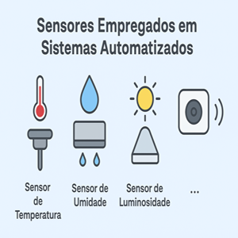
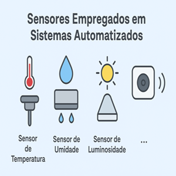

const express = require('express');
const app = express();
app.use(express.json());
app.post('/enviar', (req, res) => {
const dado = req.body.msg;
res.send('O backend recebeu: ' + dado);
});
app.listen(3000, () => {const express = require('express')
const app = express()
const { SerialPort, ReadlineParser} = require('serialport')
const readline = require('readline')
const cors = require('cors')
const PORT = 3000
const hostname = 'localhost'
const BAUD_RATE = 9600
const SERIAL_PORT = "COM8"
//------------------config de Middleware
app.use(express.urlencoded({extended: true}))
app.use(express.json())
app.use(cors())
//---------INICIALIZAÇÃO DO ARDUINO---------
const arduino = new SerialPort({
path: SERIAL_PORT,
baudRate: BAUD_RATE,
})
const parserDados = arduino.pipe(new ReadlineParser({delimiter: "\r\n"}))
arduino.on("open", ()=>{
console.log(`conectado ao arduino em ${SERIAL_PORT}`)
})
arduino.on("error", (err)=>{
console.error('Erro na comunicação serial ', err)
})
//---parser das linhas:garantir a recepção completa dos dados
parserDados.on("dados", (dad)=>{
const linha = dad.toString().trim()
if(linha > 0){
console.log('arduino: ', linha)
}
})
//leitura do teclado para testes / troca de dados manuais
const teclado = readline.createInterface({
input: process.stdin,
output: process.stdout
})
teclado.on("line", (input)=>{
const comando2 = input.trim()
if(comando2 === 's'|| comando2 === 'd'){
arduino.write(comando2, (err)=>{
if(err){
console.error("erro ao enviar atalho pelo teclado",err)
}else{
console.log(`comando: ${comando2} enviado ao arduino via teclados`)
}
})
}else{
console.log("digite 's' (ligar) ou 'd' (desligar) ")
}
})
//-----------progamando as rotas => end point
app.get('/ligar', (req,res)=>{
arduino.write("s", (err)=>{
if(err){
console.error("erro ao escrever no arduino:",err)
return res.status(500).json({ led: "erro", detalhe: "falha ao enviar o comando"})
}
})
res.status(200).json({ led: "ligado"})
})
app.get('/desligar', (req,res)=>{
arduino.write("d", (err)=>{
if(err){
console.error("erro ao escrever no arduino:",err)
return res.status(500).json({ led: "erro", detalhe: "falha ao enviar o comando"})
}
})
res.status(200).json({ led: "desligado"})
})
app.listen(PORT,hostname, ()=>{
console.log(`servidor rodando em ${hostname}:${PORT}`)
console.log("digite 's' para ligar e 'd' para desligar ")
console.log('---------------------------------------------')
})
console.log('Servidor rodando na porta 3000');
});
 
